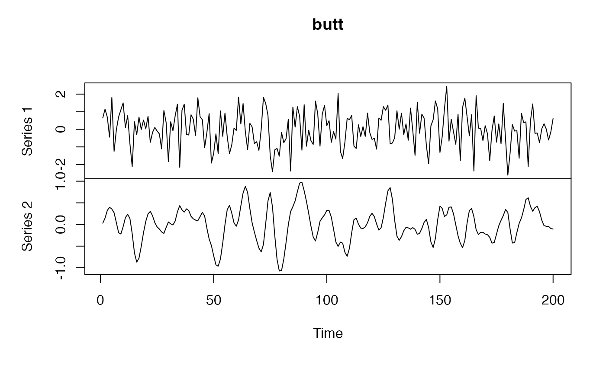
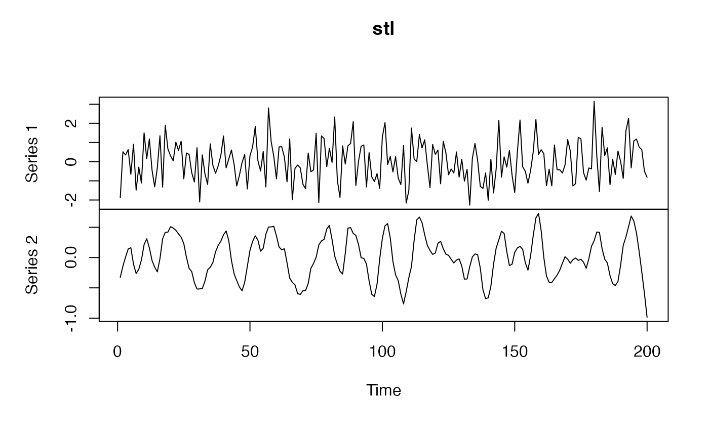
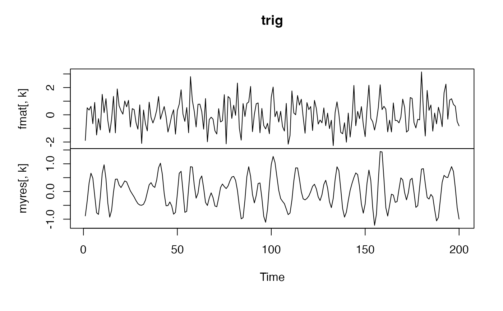

frequencyFilterfMRI.RdThis function works for a BOLD time-series data
frequencyFilterfMRI(boldmat, tr, freqLo = 0.01, freqHi = 0.1, opt = "butt")Time series matrix for bold image
The sequence's TR value , typically 3 or 4.
The lower frequency limit, e.g. 0.01 in band-pass filter
The higher frequency limit, e.g. 0.1 in band-pass filter
one of 'trig','butt','stl' Type of filter to use: butterworth, trigonometric, stl.
output is the filtered time series.
fmat <- replicate(1000, rnorm(200))
k <- 1
tr <- 4
for (ftype in c("butt", "stl", "trig")) {
myres <- frequencyFilterfMRI(fmat, tr = tr, freqLo = 0.01, freqHi = 0.05, opt = ftype)
comparemat <- cbind(fmat[, k], myres[, k])
plot(ts(comparemat), main = ftype)
Sys.sleep(0.3)
# uncomment below to visualize effect of frequency filtering
# temp = spectrum( ts(fmat[,k], frequency=1/tr ) )
# plot( temp$freq, temp$spec, type='l' )
# temp = spectrum( ts(myres[,k], frequency=1/tr ) )
# plot( temp$freq, temp$spec, type='l' )
}


